A Itália possui uma das histórias mais marcantes do mundo,
sendo o berço de grandes civilizações, movimentos artísticos e transformações políticas que influenciaram a humanidade.
1 A origem de Roma
Segundo a tradição romana, a cidade de Roma foi fundada em 753 a.C. pelos irmãos Rômulo e Remo.
Inicialmente, Roma era uma pequena cidade que, ao longo dos séculos, expandiu seus territórios e se tornou uma das maiores potências da Antiguidade.
A Roma Antiga foi o centro de uma civilização que influenciou a política, a cultura e a sociedade ocidental.
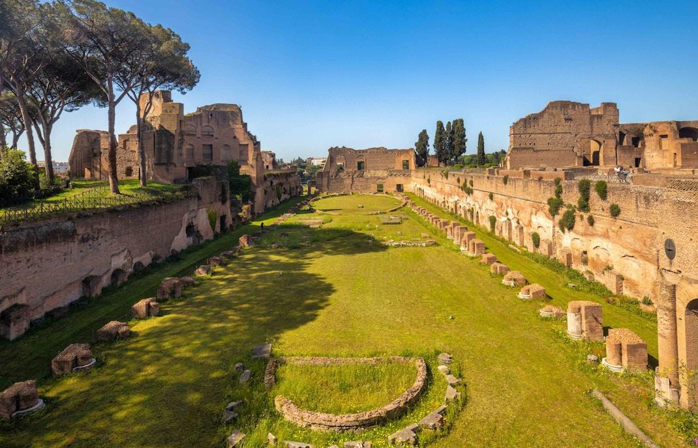
A Colina Palatina é um dos locais associados às origens de Roma e à história de sua fundação.
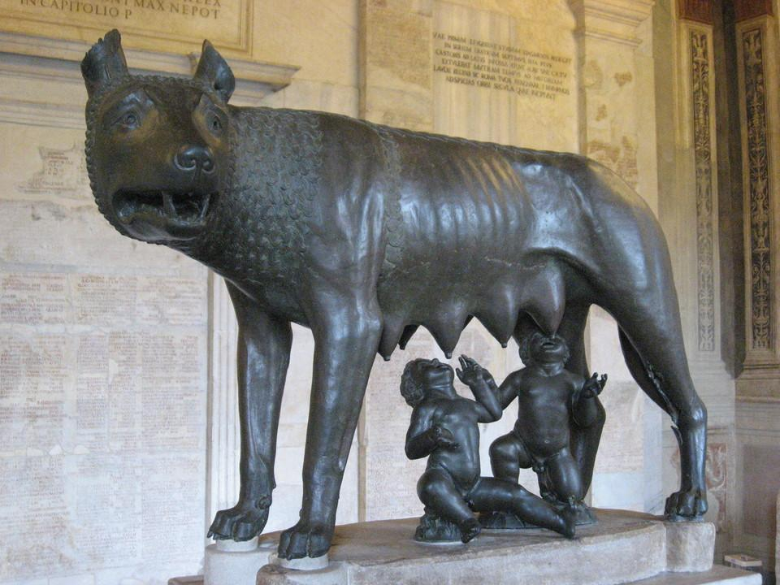
Rômulo e Remo são os irmãos da lenda que conta a origem de Roma, tradicionalmente fundada em 753 a.C.
2 O Império Romano
Em 27 a.C., Otaviano, conhecido como Augusto, tornou-se o primeiro imperador romano. O Império Romano expandiu-se por vastas regiões da Europa, África e Ásia, construindo estradas, aquedutos, monumentos e cidades.
A civilização romana deixou importantes legados, como o direito romano, a arquitetura, o latim e instituições que influenciaram diversas sociedades.
Em 476 d.C., o Império Romano do Ocidente chegou ao fim, tradicionalmente considerado um marco da transição da Antiguidade para a Idade Média.
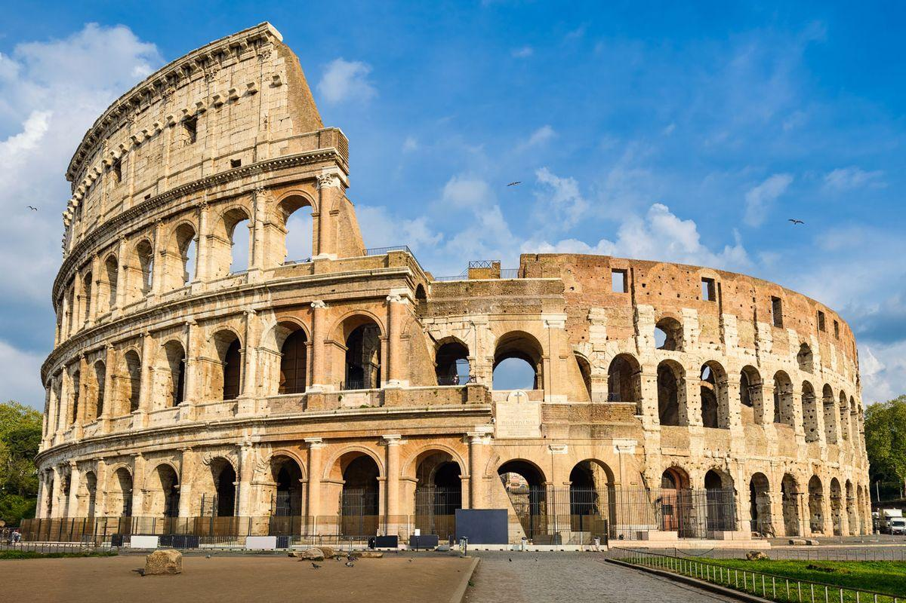
O Coliseu foi um grande anfiteatro romano utilizado para combates de gladiadores e outros espetáculos públicos.
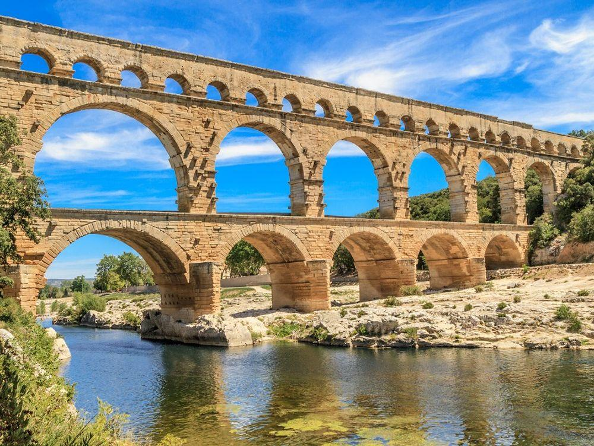
Os aquedutos romanos transportavam água para cidades, abastecendo fontes, banhos públicos e residências.
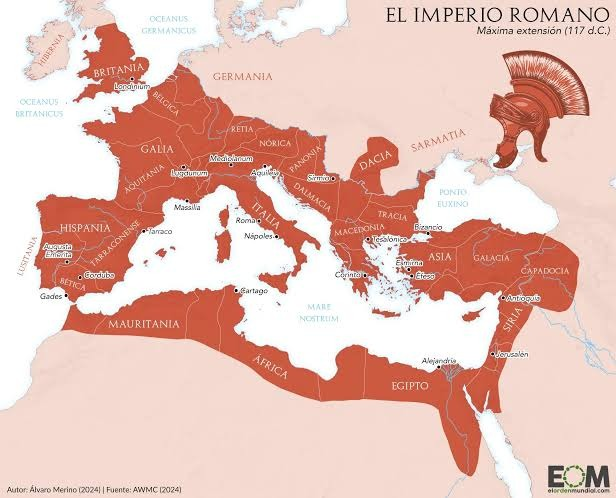
O Império Romano alcançou uma enorme extensão territorial, dominando regiões da Europa, África e Ásia.
3 A Itália durante a Idade Média
Após a queda do Império Romano do Ocidente, a península Itálica passou por invasões, disputas territoriais e mudanças políticas. Durante a Idade Média, cidades como Veneza,
Florença e Gênova ganharam destaque por seu comércio e riqueza, tornando-se importantes centros econômicos e culturais.
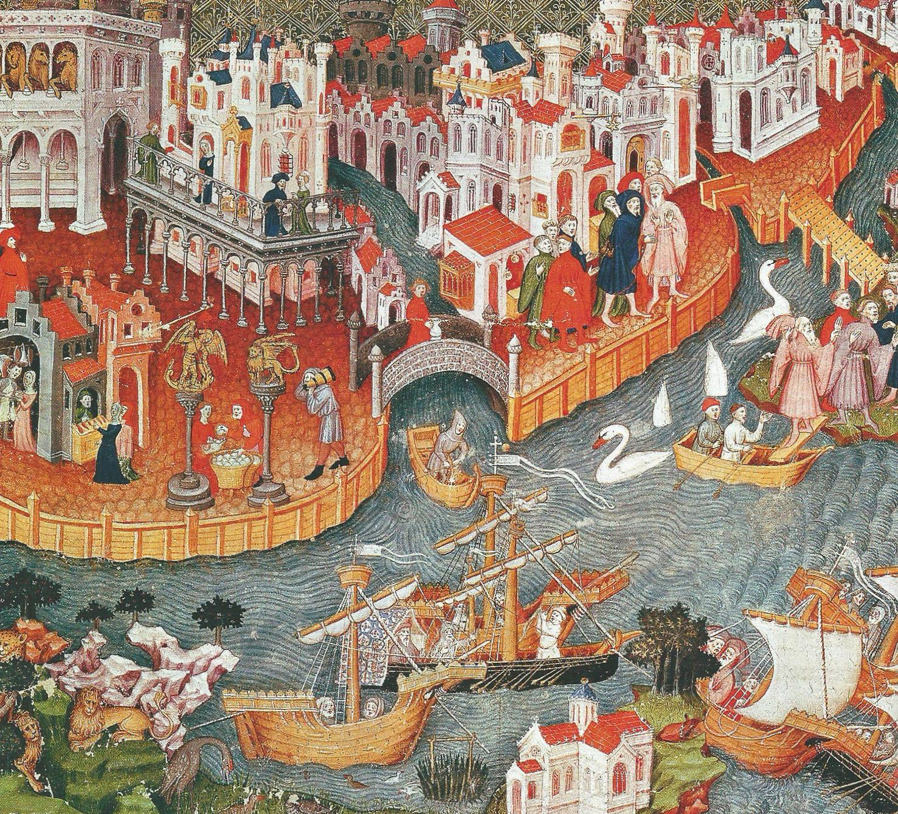
Veneza destacou-se pelo comércio marítimo e por sua localização estratégica nas rotas comerciais europeias.
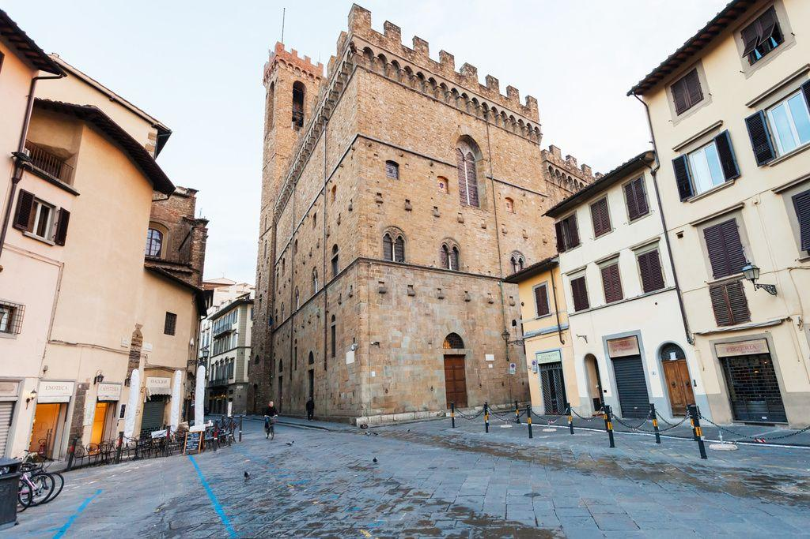
Florença cresceu como centro comercial e financeiro, tornando-se uma das cidades mais importantes da Itália medieval.
O comércio medieval contribuiu para o enriquecimento das cidades italianas e para o desenvolvimento de suas atividades econômicas.
4 o Renascimento italiano
Entre os séculos XIV e XVI, a Itália foi o principal centro do Renascimento, movimento que valorizou as artes, a ciência, a literatura e o pensamento humanista.
Grandes nomes como Leonardo da Vinci, Michelangelo e Rafael produziram obras que se tornaram referências mundiais.
O período também contribuiu para avanços científicos e para novas formas de compreender o ser humano e a natureza.
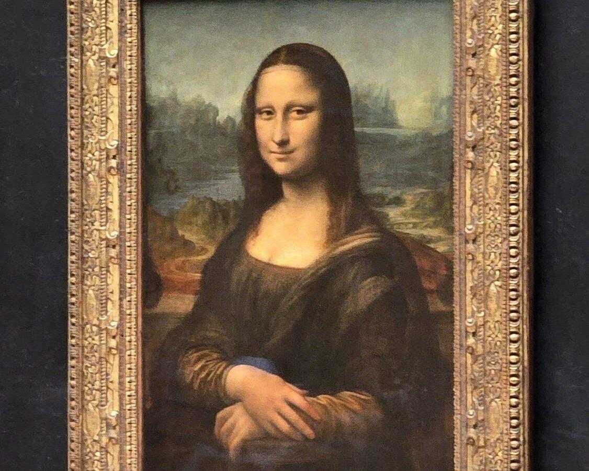
A Mona Lisa, de Leonardo da Vinci, é uma das pinturas mais conhecidas do mundo, famosa por seu realismo e expressão enigmática.
A escultura Davi, de Michelangelo, é uma obra-prima do Renascimento que representa o personagem bíblico antes de enfrentar Golias.
A Escola de Atenas, de Rafael, representa grandes filósofos da Antiguidade e destaca a importância do conhecimento e da razão.
5 A unificação da Itália
Durante séculos, a península Itálica permaneceu dividida em diferentes reinos e territórios. No século XIX, um movimento conhecido como Risorgimento impulsionou a unificação italiana.
Em 1861, o Reino da Itália foi proclamado, tendo Vítor Emanuel II como rei. Roma foi incorporada ao reino em 1870, consolidando o processo de unificação territorial.
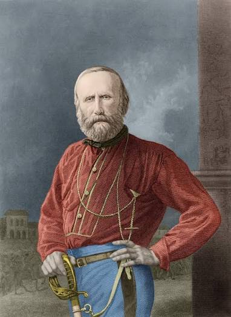
Giuseppe Garibaldi foi um líder militar fundamental para a unificação italiana, participando de campanhas pela união do território.
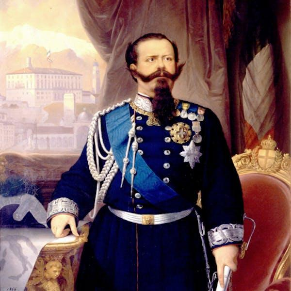
Vítor Emanuel II tornou-se o primeiro rei da Itália unificada, proclamada em 1861.
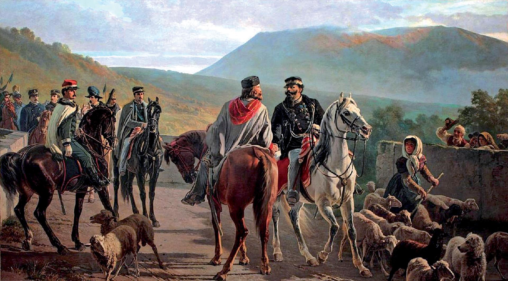
O encontro de Teano, em 1860, marcou a entrega dos territórios conquistados por Garibaldi ao rei Vítor Emanuel II.
6 A Itália no século XX
Durante a Primeira Guerra Mundial, a Itália lutou ao lado dos Aliados. Posteriormente, em 1922, Benito Mussolini chegou ao poder e estabeleceu uma ditadura fascista. Na Segunda Guerra Mundial, o país aliou-se inicialmente à Alemanha nazista, mas, em 1943, rompeu com o regime de Mussolini e passou por conflitos internos até o fim da guerra.
Em 1946, após um referendo popular, os italianos escolheram abolir a monarquia e estabelecer uma república. A Constituição republicana entrou em vigor em 1948.
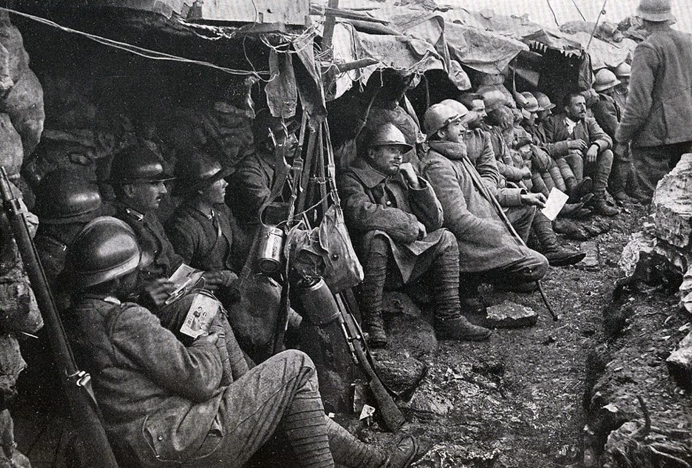
A participação italiana na Primeira Guerra Mundial trouxe grandes perdas humanas e mudanças políticas para o país.
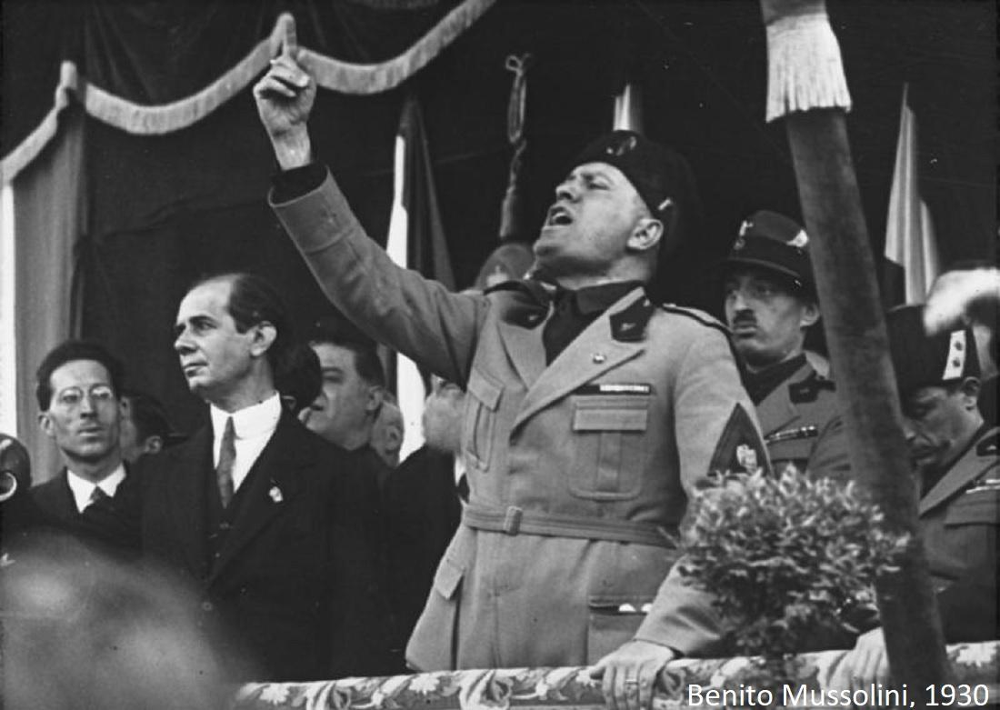
Benito Mussolini liderou o regime fascista italiano, caracterizado pelo autoritarismo e pela repressão política.
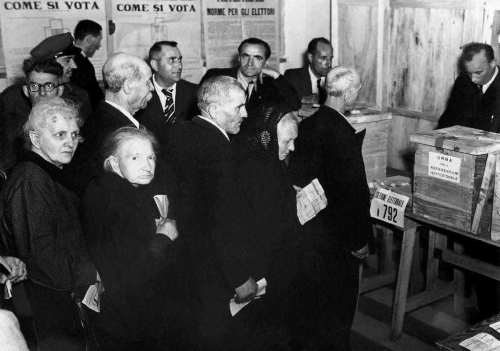
Em 1946, os italianos votaram pelo fim da monarquia e pela criação da República Italiana.
7 A Itália atualmente
Atualmente, a Itália é uma república parlamentar localizada no sul da Europa e integra a União Europeia. O país é reconhecido por sua economia industrial, sua gastronomia, seu patrimônio histórico, sua moda e suas contribuições para a arte e a ciência.
Sua história continua presente em monumentos, museus, cidades e tradições que atraem visitantes do mundo inteiro.
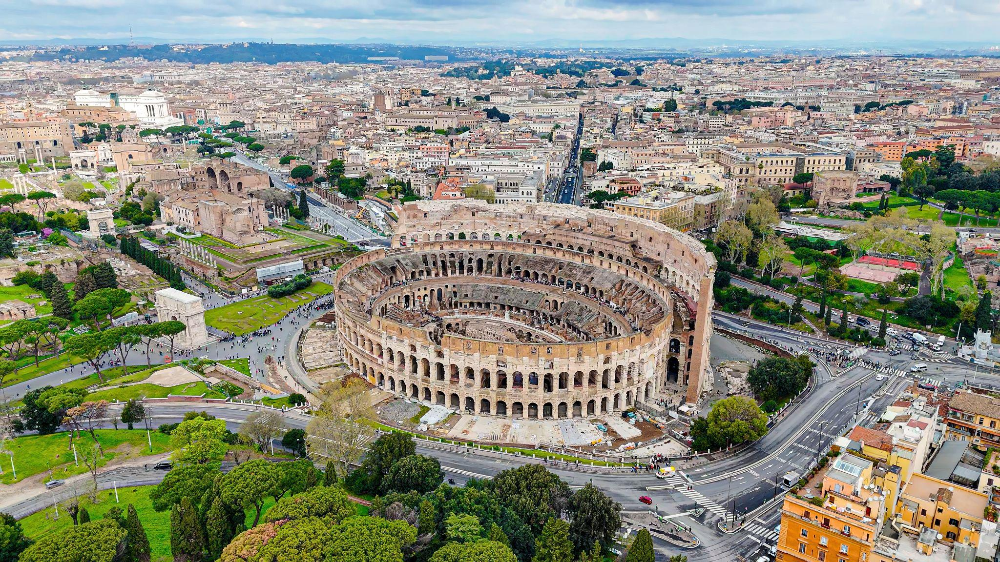
Roma é a capital da Itália e reúne monumentos históricos, edifícios modernos e importantes instituições políticas.
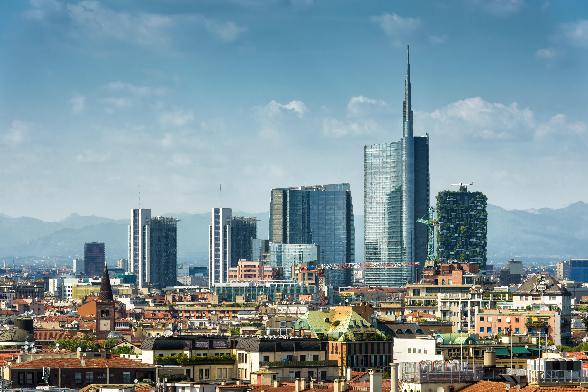
As áreas urbanas italianas combinam centros históricos, infraestrutura moderna e atividades comerciais e culturais.
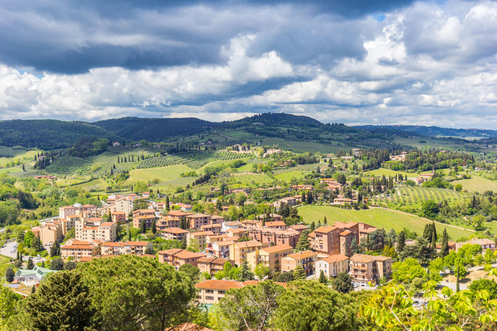
As paisagens italianas incluem montanhas, campos, vilarejos históricos e regiões rurais com tradições próprias.
Personagens históricos da Itália
Conheça algumas das figuras que marcaram a história italiana.
Clique em um personagem para descobrir sua trajetória.